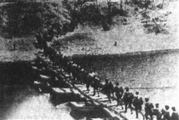

Battle of Shanghai 1937.11
The Battle of Shanghai (also known as the Battle of 8.13, the Second Battle of Shanghai, and the Second Shanghai Incident in Japan) was the first major battle between China and Japan in the War of Resistance against Japanese Aggression. It was also the largest and most deadly battle in the whole Sino-Japanese War. In the Battle of Shanghai, a total of about 1 million troops from both Sides were engaged in the battle. The battle itself lasted for three months, with 300,000 troops from nine Japanese divisions and more than 700,000 troops from 73 Chinese divisions. Shanghai battle, so that the Japanese were forced to shift the strategic direction of the main attack, s hattered the Japanese "three months to destroy China" plan.
Battle of Nanjing 1937.12
The Battle of Nanking, also known as the Battle of Nanking, was fought by the Chinese army to defend its capital, Nanjing, against the Invading Japanese forces after losing the Battle of Shanghai. On December 1, 1937, the Japanese army headquarters issued the "No. 8 Mainland Order", ordering the Central China front army to coordinate with the navy and divide troops into three routes to capture Nanjing. Chiang kai-shek appointed Tang Shengzhi as the commander of the capital garrison, deployment of the Battle of Nanjing. Because of the contrast between the enemy and my strength, the gates of Nanjing have been captured by the Japanese, the defenders resist, sacrifice countless. On The 12th, Tang Shengzhi was ordered by Chiang Kai-shek to withdraw the garrison. Garrison ministries due to withdrawal disorder, most detained in the city, the Japanese were massacred, heavy losses. On December 13, Nanjing fell, the Japanese army began the brutal Nanjing Massacre.
Nanjing Massacre 1937.12

The Nanjing Massacre refers to the Massacre of Nanjing on December 13, 1937 (which academics believe began on December 5) after the Defeat of the Republic of China in the Battle of Nanjing during the 1931-45 War of Resistance against Japanese Aggression. Under the command of Ishigen Matsui, commander of the Dispatch army in Central China, and Tani Shoufu, commander of the 6th Division, the Invading Japanese troops in Nanjing and nearby areas for six weeks of organized, planned, premeditated massacre and rape, arson, robbery and other bloody atrocities. The Nanjing Massacre, in which civilians and prisoners of war were killed and families were torn apart, claimed more than 300,000 lives.
Battle of Xuzhou 1938.1-5
Xuzhou battle during the Anti-Japanese War is the two sides in xuzhou, jiangsu province as the center of nanjing-chuxian section on jin-pu railway (tianjin to pukou), designed by the longhai (baoji to lianyungang) railway area of a massive defense battle, of which 1938 most famous taierhchuang war between April and march, because of the panic in the Japanese army more than ten thousand people, the history called the taierhchuang triumph. The Battle of Xuzhou gave a huge blow to the Japanese army, greatly delayed the pace of the Japanese attack, for China to deploy the Battle of Wuhan to win time.
Battle of Wuhan 1938.6-11
The battle of Wuhan was a battle between The Chinese army and the Japanese invaders in Wuhan during
the War of Resistance against Japanese aggression. From June to October, 1938, during the twenty-seventh
year of the Republic of China, the troops of China's fifth and ninth theater zones were deployed outside
Wuhan along the north and south banks of the Yangtze River, covering the vast areas of Anhui, Henan,
Jiangxi and Hubei provinces. It was a battle with the largest scale, longest duration and the largest
number of enemies destroyed in the strategic defense stage of the War of Resistance against Japan .
In this war, The Chinese army fought bloody battles and fought hundreds of times, greatly consuming
the effective forces of the Japanese army. Although the Japanese army captured Wuhan, its strategic
attempt to force the National government to yield to end the war was not achieved. Since then, China's
War of Resistance against Japanese Aggression has entered a stage of strategic stalemate.